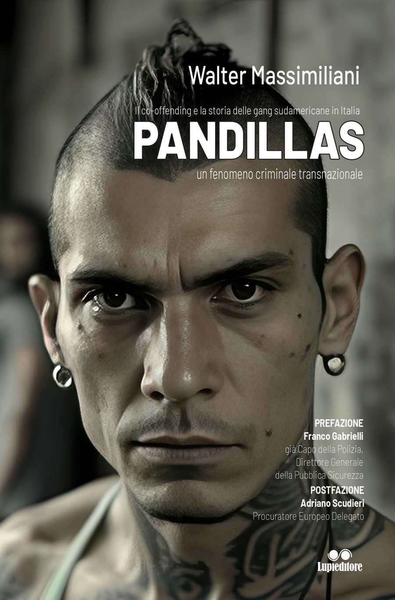

Esperienza
La conoscenza diretta dei fenomeni criminali maturata attraverso il percorso professionale.
Analisi e ricerca sui fenomeni della criminalità giovanile organizzata
Autore di Pandillas, studio l'evoluzione delle gang urbane, dei fenomeni di devianza giovanile e delle reti criminali transnazionali attraverso ricerca, analisi e divulgazione.
La comprensione dei fenomeni criminali giovanili richiede un approccio capace di superare la narrazione emotiva della cronaca per analizzare strutture, linguaggi, dinamiche di gruppo e processi di trasformazione sociale.
Il lavoro di Walter Massimiliani nasce dall'incontro tra esperienza sul campo, studio dei fenomeni criminali e attività di divulgazione.
Leggi la biografia completa →La conoscenza diretta dei fenomeni criminali maturata attraverso il percorso professionale.
Lo studio delle dinamiche sociali, culturali e organizzative delle gang giovanili.
La trasformazione dell'analisi in conoscenza accessibile per istituzioni, media e comunità.
Studio dei fenomeni criminali giovanili organizzati.
Libri e contributi dedicati all'analisi delle gang urbane e delle reti criminali transnazionali.
Analisi e approfondimenti sui fenomeni emergenti.
Conferenze, incontri e partecipazioni a iniziative culturali e istituzionali.

Il co-offending e la storia delle gang sudamericane in Italia — un fenomeno criminale transnazionale.
Un contributo dedicato allo studio delle pandillas come fenomeno criminale organizzato transnazionale e, senza dubbio, il primo testo in Italia ad affrontare il fenomeno del co-offending e delle bande sudamericane in Italia. Prefazione di Franco Gabrielli, già Capo della Polizia. Postfazione di Adriano Scudieri, magistrato.
Analisi e approfondimenti sui fenomeni della criminalità giovanile organizzata.
Dalla scuola di Chicago all'Eurogang Network: teorie, definizioni e il vuoto normativo italiano.
Leggi l'analisi → PandillasLettere, segni delle mani, tatuaggi e graffiti: come comunicano i pandilleros.
Leggi l'analisi → Devianza giovanileLa storia del fenomeno in Italia, dalle paranze dei bambini alle crew trapper.
Leggi l'analisi →Interventi e approfondimenti nei media nazionali.
Partecipazioni a convegni, seminari e incontri di approfondimento rivolti a istituzioni, università, scuole e operatori interessati ai fenomeni della criminalità giovanile.
Scopri le attivitàPer richieste di analisi, conferenze, collaborazioni accademiche o editoriali: